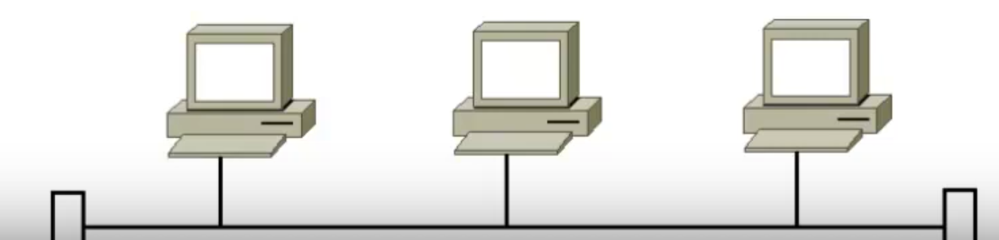
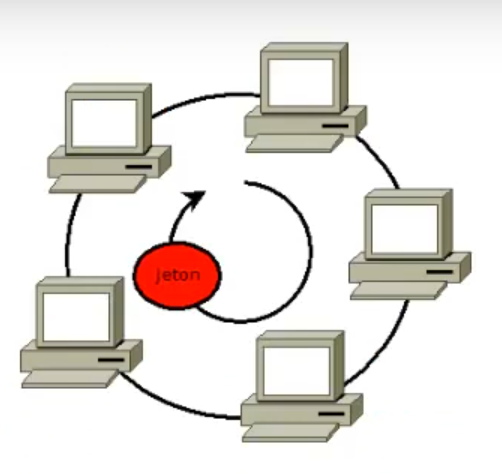
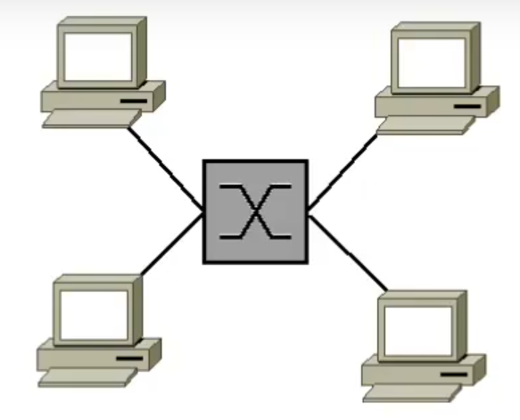
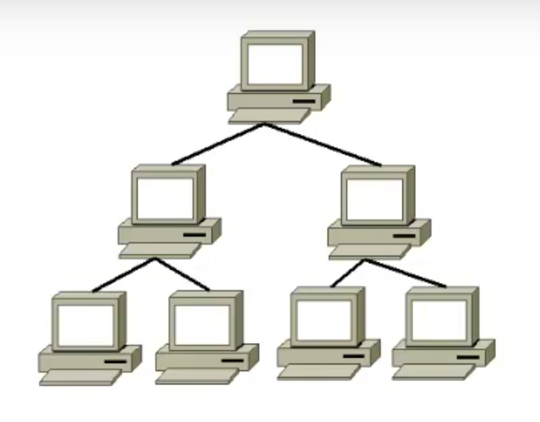
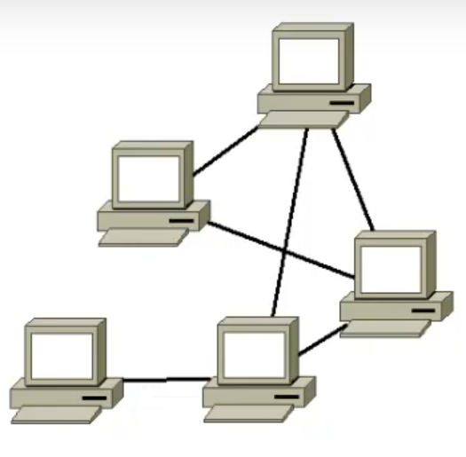

Topologies
Plan
• introduction
• Réseaux en bus
• Réseaux en anneaux (Token Ring, FDDI)
• Réseaux en étoile
• Réseaux hiérarchiques
• Réseaux maillé
Introduction
• Définie l'architexture d'un réseau
◇ relation entre composants
◇ via un ou plusieurs médias
◇ connections
◇ hiérarchie
Réseaux en bus
• câblagle un unique
◇ liasion passive par dérivation (éléctrique ou optique)
◇ uni ou bi-directionnel
◇ terminé à chque extrémité par des “bouchons”
▪ élimine les réflexions
• quasi obsolète
• avantages :
◇ simple
◇ économique
• inconvénients
◇ panne totale en cas de dysfonctionnment du support
◇ bande passate partagée
◇ taux de collision élevé

Réseaux en anneaux (Token Ring, FDDI)
• Chaque station joue le rôle de station intermédiare
◇ sur une connexion unque “circulaire”
◇ le plus souvent grâce à un répartiteur sur lequel sont connectés tout les éléments
• Sens unique
◇ souvent composé de deux anneaux à sens opposés
• Avantages
◇ isolation de chaque noeud
▪ bande passante dédié
• Inconvénients
◇ coût
◇ une défaillance d'un élément entraîne une panne de tout le système

Réseaux en étoile
• noeuds connectés grâce à ne équipement d'interconnexion
◇ concentrateur (hub) ou commutateur (switch)
◇ chaque noeud étant connecté à un équipement
• topologie la plus courante
• Inconvénients
◇ coût d'évolutiooon élevé
• Avantages
◇ pas de défaillance générale en cas de dysfonctionnement d'une liaison
◇ meilleur débit

Réseaux hiérarchiques
• ou réseaux en arbre
• maximum 4 niveaux
• souvent utilisé pour les LAN
• Avantages
◇ très faoble coût
◇ flexibilité
• Inconvénient
◇ rôle centrale de l'élément et des liaisons de niveau 1

Réseau maillé
• réseau pair à pair
◇ sans aucune hiérarchie centrale
◇ chanque noeud doit recevoir, envoyer et relayer l'information
• grand réseaux de distribution
◇ ex : Internet
• optimisé pour le sans-fil
• voi Open-Mesh.org (B.A.T.M.A.N), Serval, oui encore commotion
• Incovénient
◇ nombre de liasons
▪ N(N-1)/2
▪ croissance rapide
• avantages
◇ tolérance aux pannes et aux interférences
▪ issue de la recherche militaire
◇ déploiement rapide et simplfié
◇ grande évolutilivité de la converture

Ce qu'on a couvert
• Les différents topoplogies réseaux
◇ bus
◇ anneau
◇ étoile
◇ arbre
◇ maille